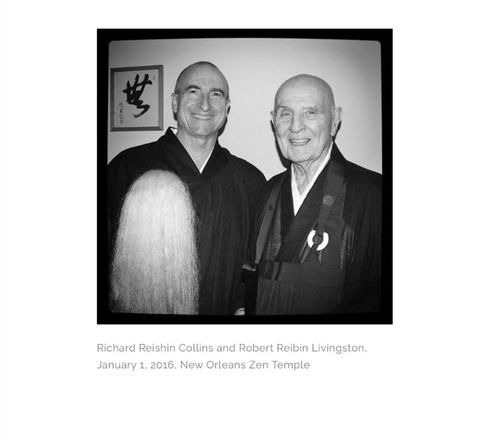
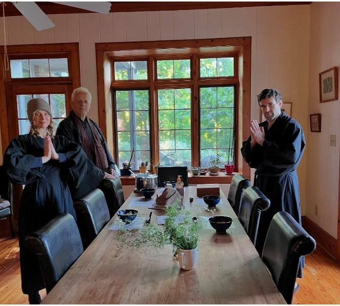

Richard Reishin Collins (b. 1952) is the second Abbot of the New Orleans Zen Temple and founder of Stone Nest Dojo. He began Zen practice with Robert Livingston in 2001, received monastic ordination in 2010, and became Abbot in 2016.
A published poet, translator, and former dean, his books include No Fear Zen, translations of Deshimaru and Coupey, and the poetry collection Stone Nest (Shanti Arts, 2025).
Full biography, books, and blog: americanzenassociation.org
